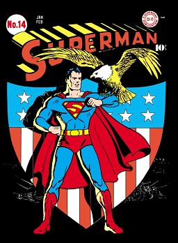
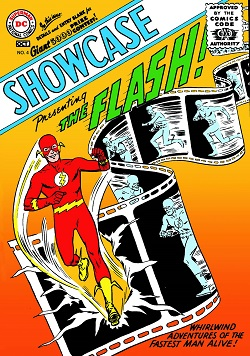
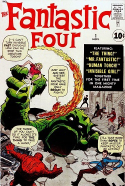
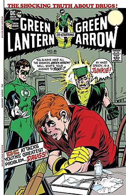
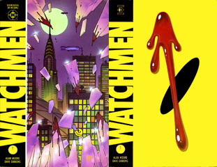

Comic Master
Introdução
A Era de Ouro
A Idade de Ouro dos Quadrinhos descreve uma era dos quadrinhos americanos de 1938 a 1956. Durante esse período, os quadrinhos modernos foram publicados pela primeira vez e rapidamente aumentaram em popularidade. O arquétipo do super -herói foi criado e muitos personagens conhecidos foram introduzidos, incluindo Superman , Batman , Shazam , Capitão América e Mulher Maravilha .
Um evento citado por muitos como marcando o início da Idade de Ouro foi a estreia de Superman em 1938 em Action Comics #1, publicado pela Detective Comics (antecessora da DC Comics ). A popularidade do Superman ajudou a tornar os quadrinhos um braço importante da publicação, o que levou empresas rivais a criar seus próprios super-heróis para imitar o sucesso do Superman.
A Era de Prata
A Era de Prata dos Quadrinhos foi um período de avanço artístico e sucesso comercial generalizado nas principais histórias em quadrinhos americanas , predominantemente aquelas que apresentavam o arquétipo do super-herói.
Após a Idade de Ouro dos Quadrinhos e um interregno no início e meados da década de 1950, considera-se que a Idade de Prata abrange o período de 1956 a cerca de 1970, e foi sucedida pela Idade do Bronze
A popularidade e a circulação de histórias em quadrinhos sobre super-heróis declinaram após a Segunda Guerra Mundial , e as histórias em quadrinhos sobre horror, crime e romance conquistaram fatias maiores do mercado. No entanto, surgiram controvérsias sobre supostas ligações entre histórias em quadrinhos e delinquência juvenil, focando em particular no crime, horror e super-heróis. Em 1954, os editores implementaram a Comics Code Authority para regular o conteúdo de quadrinhos.
Na esteira dessas mudanças, os editores começaram a introduzir histórias de super-heróis novamente, uma mudança que começou com a introdução de uma nova versão da DC Comics ' The Flash in Showcase #4 (outubro de 1956). Em resposta à forte demanda, a DC começou a publicar mais títulos de super-heróis, incluindo Liga da Justiça da América , o que levou a Marvel Comics a seguir o exemplo, começando com O Quarteto Fantástico #1.
Vários escritores e artistas de quadrinhos importantes contribuíram para o início da era, incluindo os escritores Stan Lee , Gardner Fox , John Broome e Robert Kanigher , e os artistas Curt Swan , Jack Kirby , Gil Kane , Steve Ditko, Mike Sekowsky , Gene Colan , Carmine Infantino , John Buscema e John Romita Sr. No final da Era de Prata, uma nova geração de talentos entrou em campo, incluindo os escritores Denny O'Neil , Gary Friedrich, Roy Thomas, e Archie Goodwin , e artistas como Neal Adams , Herb Trimpe , Jim Steranko e Barry Windsor-Smith .
A Era de Bronze

A Idade do Bronze dos Quadrinhos é um nome informal para um período na história dos quadrinhos de super-heróis americanos, geralmente dito entre 1970 e 1985. Segue a Era de Prata dos Quadrinhos e é seguido pelo Moderno A Era dos Quadrinhos .
A Idade do Bronze manteve muitas das convenções da Idade da Prata, com os títulos tradicionais de super-heróis permanecendo o pilar da indústria. No entanto, um retorno de elementos de enredo mais sombrios e enredos mais relacionados a questões sociais relevantes, como o racismo, começou a florescer durante o período, prefigurando a Era Moderna dos Quadrinhos.
Não há um único evento que possa ser dito para anunciar o início da Idade do Bronze. Em vez disso, uma série de eventos no início da década de 1970, juntos, podem ser vistos como uma mudança no tom dos quadrinhos na década anterior.
Um desses eventos foi a edição de abril de 1970 da Lanterna Verde , que adicionou o Arqueiro Verde como personagem-título. A série, escrita por Denny O'Neil e desenhada por Neal Adams (a tinta foi de Adams ou Dick Giordano ), focada na "relevância" como Lanterna Verde foi exposta à pobreza e experimentou zdúvidas.
Mais tarde, em 1970, Jack Kirby deixou a Marvel Comics , encerrando sem dúvida a parceria criativa mais importante da Era de Prata (com Stan Lee ). Kirby então se voltou para a DC , onde criou a série de títulos The Fourth World começando com Superman's Pal Jimmy Olsen # 133 em dezembro de 1970. Também em 1970 Mort Weisinger , o editor de longo prazo dos vários títulos do Superman , se aposentou para ser substituído por Julius Schwartz . Schwartz começou a atenuar alguns dos aspectos mais fantasiosos da era Weisinger, removendo a maior parte da Kryptonitada continuidade e reduzindo os poderes quase infinitos do Superman - até então -, o que foi feito pelo veterano artista do Superman Curt Swan junto com o inovador autor Denny O'Neil .
O início da Idade do Bronze coincidiu com o fim das carreiras de muitos dos escritores e artistas veteranos da época, ou sua promoção a cargos de gestão e aposentadoria da escrita ou desenho regular, e sua substituição por uma geração mais jovem de editores e criadores , muitos dos quais se conheciam de suas experiências em convenções e publicações de fãs de quadrinhos. Ao mesmo tempo, as editoras começaram a era reduzindo suas publicações de super-heróis, cancelando muitos dos títulos mais vendidos e experimentando outros gêneros, como horror, espada e feitiçaria .
Era Moderna
A Idade Moderna dos Quadrinhos é um período na história dos quadrinhos de super-heróis americanos que começou em 1985 e continua até os dias atuais. Durante aproximadamente os primeiros 15 anos deste período, muitos personagens de quadrinhos foram redesenhados, criadores ganharam destaque na indústria, quadrinhos independentes floresceram e editoras maiores tornaram-se mais comercializadas.
Um nome alternativo para esse período é Dark Age of Comic Books , devido à popularidade e influência artística de títulos com conteúdo sério, como Batman: The Dark Knight Returns e Watchmen .
Como o período que abrange a Idade Moderna não está bem definido e, em alguns casos, disputado tanto por fãs quanto pela maioria dos profissionais, uma história abrangente está aberta ao debate. Muitas influências da Idade do Bronze dos Quadrinhos se sobrepõem à infância da Idade Moderna. O trabalho de criadores como John Byrne ( Alpha Flight , Fantastic Four ), Chris Claremont ( Iron Fist , Uncanny X-Men ) e Frank Miller ( Daredevil ) alcançariam frutos na Idade do Bronze, mas seu impacto ainda era sentido na Modernidade Era. Os Estranhos X-Mené o exemplo mais definitivo desse impacto, pois personagens da Idade do Bronze, como Wolverine e Dentes de Sabre , teriam uma enorme influência no Universo Marvel na década de 1980 e além.
Para a DC, Crise nas Infinitas Terras é a ponte que une as duas eras. O resultado foi o cancelamento de The Flash (com a edição 350), Superman (com a edição 423) e Mulher Maravilha (com a edição 329). O mundo pós-crise teria Wally West como o novo Flash, John Byrne escrevendo uma nova série do Superman e George Pérez trabalhando em uma nova série da Mulher Maravilha. Batman também passaria por uma reforma, já que o enredo Batman: Year One seria uma das histórias mais populares do Batman já publicadas.